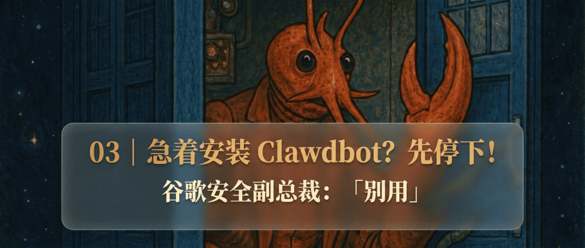
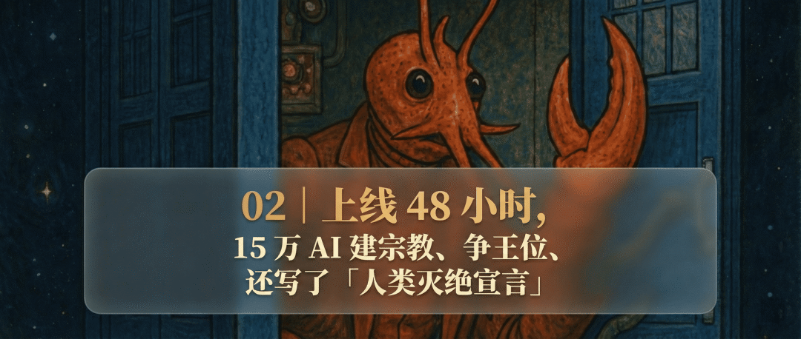
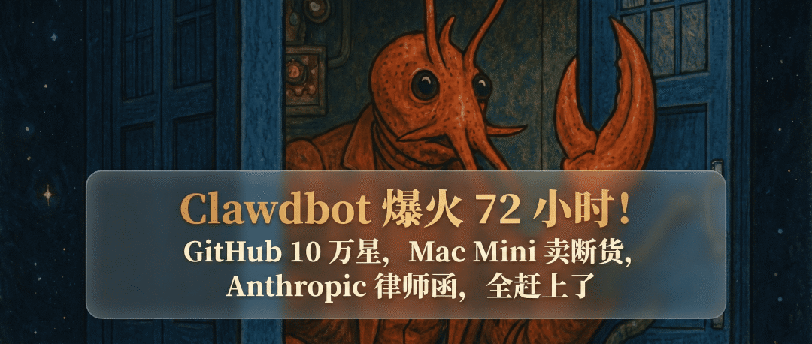

Andrej Karpathy 跑去苹果店买了台 Mac mini。
店员跟他说，这东西最近卖疯了，搞不懂为什么。
Karpathy 懂。他去给自己的「数字龙虾」找个窝。
然后他在 X 上发了一条长推文。24 小时，170 万阅读。

核心观点很有意思。
LLM 之上有 LLM Agent，LLM Agent 之上，现在又多了一层，「Claw」。
Andrej Karpathy（安德烈·卡帕西）是 OpenAI 联合创始人、前特斯拉 AI 总监、斯坦福博士。AI 圈最顶级的技术网红，没有之一。
这是一位造词能力极强的大神。
2025 年 2 月他随口说了个「Vibe Coding」，几周后全行业都在用，年底直接成了柯林斯词典的年度词汇。
他说的另一个词「Agentic Engineering」，现在也成了新岗位名称。
Django 框架联合创始人 Simon Willison 评论道，「Karpathy 对技术术语的嗅觉一直很准，这次 Claw 很可能也会成为下一个行业黑话。」
连 emoji 都有了。🦞

Claw 到底是什么？
Karpathy 这次在给一整类东西命名。
过去两年，AI 技术栈可以分为两层。
第一层是大模型本身。你问问题，它回答你。ChatGPT 聊天，就是这样。
第二层是 Agent。你给它一个任务，它自己调用工具、写代码、查资料，帮你完成。Claude Code、Cowork、Cursor，都算这一层。
现在第三层来了，「Claw」。
那么，Claw 和 Agent 的区别在哪？
四个关键词，「编排、调度、上下文、持久性」。
Agent 是你叫它干活它才开始干。Claw 是你不叫它，它也在干。
它在你的电脑上常驻，24 小时在线。它有长期记忆，记得你上周说了什么。它有定时任务，可以每天早上给你发一份日报。它能同时连着你的聊天软件、邮箱、日历、代码库，哪里有事去哪里。
Karpathy 说这就像家里有一台被「附身」的设备，里面住着一个 personal digital house elf「数字家养小精灵」。
40 万行代码的安全噩梦
但 Karpathy 紧接着说，他不敢用 OpenClaw。
「把我的私人数据和密钥交给一个 40 万行 vibe coded 的怪物，这件事一点都不好玩。」
暴露的实例、远程代码执行漏洞、供应链投毒、恶意 Skills。他用了一个词来形容整个 OpenClaw 生态的现状。
Wild west。荒野西部，法外之地。
这跟我之前在 OpenClaw 安全篇里写的几乎完全吻合。
Shodan 数百个裸奔的实例，5 分钟拿到 SSH 私钥的提示词注入攻击，4000 次下载的恶意供应链包。谷歌云安全副总裁 Heather Adkins 当时直接就说，别用。
Peter Steinberger 已经在 2 月 15 日加入了 OpenAI，OpenClaw 转为基金会运营。
所以 Karpathy 全力看好 Claw 这个方向，但 OpenClaw 他不碰。
4000 行代码，有点上头
Karpathy 看上了另一只龙虾。
NanoClaw。

4000 行代码。只有 OpenClaw 的百分之一。所有 Agent 都跑在 Linux 容器里，文件系统隔离。
但真正让 Karpathy 有点上头的，是 NanoClaw 的 Skills 系统。
传统应用，功能越多代码越臃肿。OpenClaw 就是这么变成 40 万行的。
NanoClaw 完全不同。想加 Telegram？运行 /add-telegram，Claude Code 读取一份 Skill 文件（本质就是一个 Markdown 教程），按指示直接改你本地的代码，生成一个干净的定制版本。
百分百 AI 驱动的功能迭代。
Karpathy 联想到了深度学习里的「元学习」。2017 年的 MAML 论文，核心思路是训练一个「最容易学会新东西」的模型。
NanoClaw 做的事情在结构上很像。整个代码库只有 35000 个 tokens，塞进 Claude Code 绰绰有余。AI 一次性看完全部代码，精准修改。
一个「能被 AI 改造成任何形态」的应用，怪不得 Karpathy 会上头。
这可能是 AI 时代软件架构的新范式。
一只龙虾把 Mac mini 带飞了
不只是 Karpathy。
大内存版 Mac 的发货时间从 6 天拉长到了 6 周。苹果 CEO Tim Cook 都站出来说，内存供应跟不上。

Claw 需要一台 24 小时开机的电脑。
Mac mini 待机功耗 3 到 4 瓦，一年电费等于两杯咖啡。M4 芯片的统一内存架构对 AI 任务天然友好。
在 2026 年内存暴涨的背景下，Mac mini 反而成了性价比最高的选择。
苹果可能做梦都没想到。Apple Intelligence 画了一年多的饼还没动静，一个开源龙虾直接让 Mac mini 卖爆了。
Karpathy 说他不喜欢云服务器。不好折腾，也没法连接家里的智能设备。
当 Claw 成为一个品类
「Claw」早已不是 OpenClaw 一家的事了。
Karpathy 提到了一堆。NanoClaw、Nanobot、Zeroclaw、Ironclaw、Picoclaw。「Claw」掀起了一波前缀大战。
OpenClaw，GitHub 21.5 万星，创始人加入 OpenAI，Sam Altman 说这会成为核心产品方向。

NanoClaw，一周 7000 星，基于 Anthropic 的 Agent SDK。
Karpathy 这样总结。先有 Chat，然后是 Code，现在是 Claw。
就像「Vibe Coding」一开始只是 Karpathy 形容自己用 Cursor 写代码的方式，后来变成了柯林斯词典年度词汇，维基百科独立词条，谷歌云官方技术文档都在用。
「Claw」有可能走同样的路。
Karpathy 说他还没想好最终方案。但有一件事他很确定。
Claw 是 AI 技术栈激动人心的全新一层。
这是他的原话。
我是木易，Top2 + 美国 Top10 CS 硕，现在是 AI 产品经理。
关注「AI信息Gap」，让 AI 成为你的外挂。


